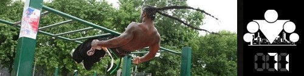

Ещё одна неделя подошла к концу, а это значит, что минули и 7 дней нашей обучающе-тренировочной программы! Надеюсь, что вы провели их с пользой, ну а пока давайте подведём итоги того, что мы узнали за это время:
День 64. Продвинутая техника №3
День 65. Виды мышечных волокон: гликолитические и окислительные, быстрые и медленные
День 66. Связки и Сухожилия человека
День 67. Сердечно-сосудистая система
День 68. Факторы мышечного роста
День 69. Миофибриллы и Митохондрии
День 70. Уважение к другим
Ну а сегодня я рад представить вам очередную технику ПРОДВИНУТОГО блока, и, по этому случая вот вам новое видео:
Продвинутые техники - это способ усложнить и разнообразить программу. Кому хватает нагрузок от стандартной, может ничего в схеме тренировок не менять
Памятка:
Итак, мы приняли во внимание отклики участников предыдущего запуска 100 дневного воркаута и пришли к выводу, что в ПРОДВИНУТОМ блоке должно быть больше разнообразия. Но это должно быть полезное разнообразие, которое не только позволит снизить психологическую усталость от определенной однообразности кругов, но и позволит повысить итоговые результаты всех участников.
Для достижения этих двух целей мы решили расширить понравившееся многим нововведение с демонстрацией новых техник выполнения упражнений с 1 дня (как было в предыдущем запуске) до 7 (то есть до целой недели)!
Перед тем, как непосредственно перейти к демонстрации техники, которую мы выбрали для вас на первой неделе ПРОДВИНУТОГО блока, нам необходимо дать вам несколько ценных указаний:
(1) Ваши круги в рамках ПРОДВИНУТОГО блока будут состоять из ТЕХ ЖЕ упражнений, что и в БАЗОВОМ блоке - подтягивания, приседания, отжимания от пола и выпады. При этом внутри круга вы выполняете все эти упражнения с использованием новой техники. Затем отдыхаете 30-60 секунд (как обычно) и делаете новый круг.
(2) Количество повторений подсказать сложно, поэтому здесь вам придется научиться правильно оценивать свои силы. С нашей стороны мы будем всегда объявлять сложность демонстрируемой техники относительно обычного варианта.
(3) Если в каком-то из кругов вы не сможете выполнить необходимое количество повторений в каком-либо из упражнений, то этот круг считается последним в сегодняшней тренировке. После него сделайте каждое упражнение (подтягивание, отжимание, приседание) по очереди на статическое удержание в точке максимального напряжения:
- для подтягиваний - удерживайтесь в верхней точке,
- для отжиманий - удерживайтесь по середине движения,
- для приседаний - удерживайтесь в положении бедер параллельно земле
- для выпадов - удерживайтесь в нижней точки (колено не касается земли!)
Введение такого ограничения связано в первую очередь с тем, что вы все ещё должны успевать восстанавливаться за 24 часа между тренировками, чтобы тренироваться каждый день. Поэтому если вы вдруг ошиблись с подбором нужного числа повторений (а вероятность этого есть), данное ограничение защитит вас от перетренированности. По крайней мере мы на это рассчитываем =)
(4) Если в какой-то момент вы поймете, что ПРОДВИНУТАЯ нагрузка становится чрезмерной, то вы всегда можете на несколько дней вернуться к обычному стилю выполнения. Вы можете чередовать обычные и продвинутые стили в течение недели. В общем, здесь есть определенный простор для творчества, связанный с тем, что все мы разные, и пока у нас слишком мало статистики по ПРОДВИНУТОМУ блоку, чтобы давать вам однозначные рекомендации!
Честно говоря я понятия не имею как ещё можно назвать эту технику, потому что как и большинство вещей в мире воркаута, у неё нет официального названия. Поэтому я называю её - полуторные повторения (на английском one and a half).
Суть заключается в том, что каждое наше повторение будет в 1,5 раза длиннее, чем обычно. Делается это за счет добавления верхней или нижней половины движения. Эта техника позволит вам дать большую нагрузку своим мышцам (потому что им нужно будет выполнить в 1,5 раза больше работы + стабилизацию в промежуточных положениях), а значит и новые стимулы для роста, не увеличивая продолжительность своей тренировки.
Например, рассмотрим отжимания. Вы принимаете упор лежа, опускаетесь вниз до конца, затем поднимаетесь вверх на половину амплитуды, затем снова опускаетесь вниз до конца и после этого поднимаетесь вверх до конца. Аналогично с подтягиваниями, приседаниями и выпадами:
По поводу дыхания в процессе выполнения упражнения. Рассматриваю на примере приседаний: на вдохе садишься, затем выдыхая приподымаешься до половины амплитуды, затем снова небольшой вдох при обратном движении вниз, и наконец, выдох с возвращением в исходное положение. То есть по всем правилам дышим, на негативной фазе вдыхаем, на позитивной выдыхаем, дыхание НЕ задерживаем!